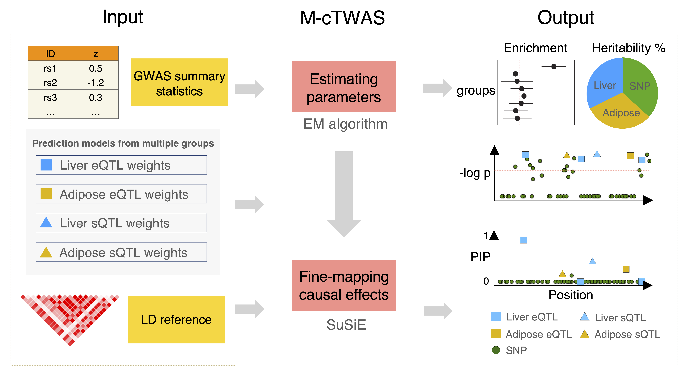

Expression quantitative trait loci (eQTLs) have often been used to nominate candidate genes from genome-wide association studies (GWAS). However, commonly used methods are susceptible to false positives largely due to linkage disequilibrium (LD) of eQTLs with causal variants acting on the phenotype directly.
Our method, “causal-TWAS” (cTWAS), addresses this challenge by borrowing ideas from statistical fine-mapping. It is a generalization of methods for transcriptome-wide association studies (TWAS), but when analyzing any gene, it adjusts for other nearby genes and all nearby genetic variants.
While the published cTWAS paper analyzes a single eQTL dataset, multigroup causal TWAS (M-cTWAS) extends the cTWAS method to integrate multiple groups of prediction models, allowing for joint analysis of multiple types of molecular traits, across potentially different tissues, cell types or conditions.
Note: this is the software behind the M-cTWAS method. If you have already run cTWAS before, see this page for the software updates in M-cTWAS software.
You can browse source code and report a bug here.
You can also join our Google Group to ask questions, report issues, or receive notifications of software updates.
Install ctwas
Use “remotes” to install the latest version of ctwas from GitHub:
install.packages("remotes")
remotes::install_github("xinhe-lab/ctwas",ref = "multigroup")Currently, ctwas has only been tested on Linux systems.
We recommend installing and running ctwas on a high-performance computing system.
Running ctwas
Running a cTWAS analysis involves four main steps:
Preparing the input data.
Computing associations of genes with the phenotype (Z-scores).
Estimating the model parameters.
Fine-mapping causal genes
The outputs of cTWAS are posterior inclusion probabilities (PIPs) for all variants and genes.
To learn more about the ctwas R package, we recommend starting with this introductory tutorial.
A minimal tutorial of how to run cTWAS without LD
To run the full cTWAS, follow these tutorials:
In addition, we have some useful functions to help run cTWAS, e.g. for creating your own reference LD data:
We also have a FAQ page for some common questions:

Citing this work
If you find the ctwas package or any of the source code in this repository useful for your work, please cite:
cTWAS paper:
Zhao S, Crouse W, Qian S, Luo K, Stephens M, He X. Adjusting for genetic confounders in transcriptome-wide association studies improves discovery of risk genes of complex traits. Nature Genetics 56, 336–347 (2024). https://doi.org/10.1038/s41588-023-01648-9
M-cTWAS paper:
Qian S, Luo K, Sun X, Crouse W, Liang L, Gu J, Stephens M, Zhao S, He X. Integrating multi-omics and multi-context QTL data with GWAS reveals the genetic architecture of complex traits and improves the discovery of risk genes. medRxiv 2025.12.19.25342620; https://doi.org/10.64898/2025.12.19.25342620
Useful resources
We have pre-computed reference LD matrices and variant information of European samples from UK Biobank. They can be downloaded here.
cTWAS requires the expression prediction models, or weights, of genes. The pre-computed weights of GTEx expression and splicing traits can be downloaded from PredictDB.